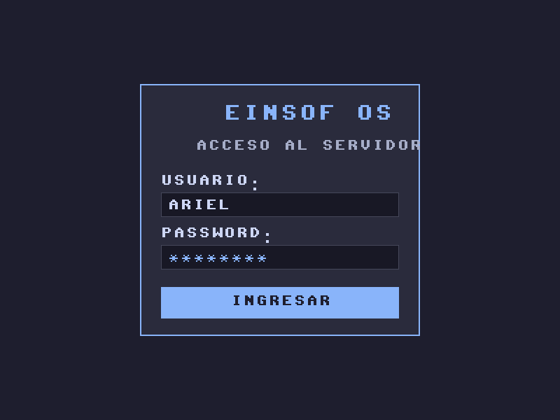

🌌 EinsofOS: Demostración de Transición de Pantallas
Renderizado Bare-Metal sin X11/Wayland/Windows • 800x600 ARGB8888 • Cero C

Pantalla 1: Acceso / Login (Efímera en RAM)
Protocolo Efímero: Al autenticar con éxito mediante el MCP en PostgreSQL 16 y proyección Stiefel, el Slab de Pantalla 1 se destruye en \(O(1)\) por incremento generacional y el hardware mapea instantáneamente el Slab de Pantalla 2.